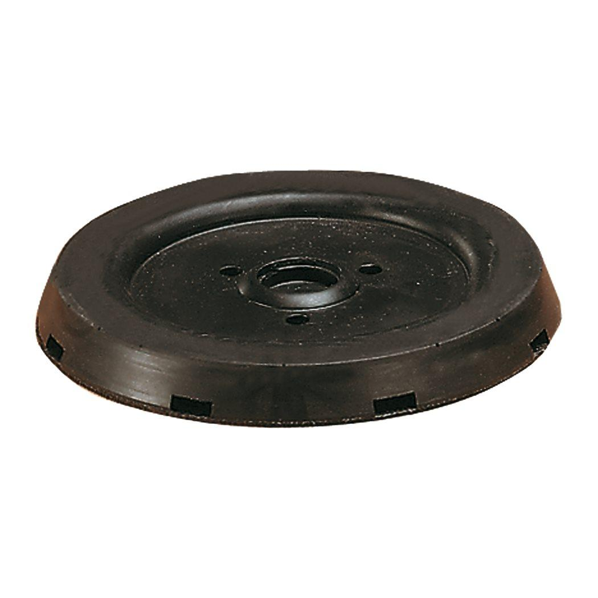
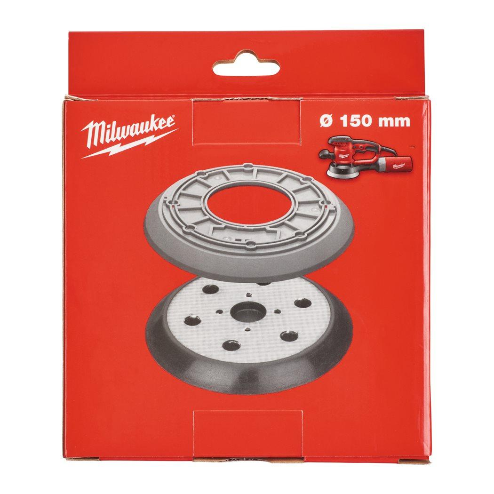

<div style="display:flex;flex-wrap:wrap;gap:8px"></div><h2>Features</h2><div><ul><li>Suitable for: EXE 400, EXE 450, TXE 150, TX 125, ROS 150 E.</li></ul></div><div><div><h2>Information</h2><table><tr><td>Diameter (mm)</td><td>150</td></tr><tr><td>Pack quantity</td><td>2</td></tr><tr><td>Article Number</td><td>4932357591</td></tr><tr><td>Article Number</td><td>4932430145</td></tr><tr><td>EAN</td><td>4002395378067</td></tr></table></div></div>